Cesium入門
本教材は、Cesiumを用いて空間データを表示する手法について解説しています。Cesiumの機能の呼び出しやKMLデータの表示などを行います。Cesiumの表示には、GitHubを用いてインターネットで公開される状態で行います。CZMLについての解説は、CZML入門の教材を参照ください。本教材を使用する際は、利用規約をご確認いただき、これらの条件に同意された場合にのみご利用下さい。
Menu
使用データ
- 越前市オープンデータ 越前市防災安全課 一次避難場所（風水害）、浸水想定区域（風水害）のデータを加工し、利用。
スライド教材
スライドのダウンロードはこちら
Cesiumとは
- CesiumはWebGL を用いたライブラリ
- 2Dだけでなく、3D表示ができる
- 球体のため、世界規模のデータの表示に適している
- 時系列データの表示も可能
Cesiumを体験する
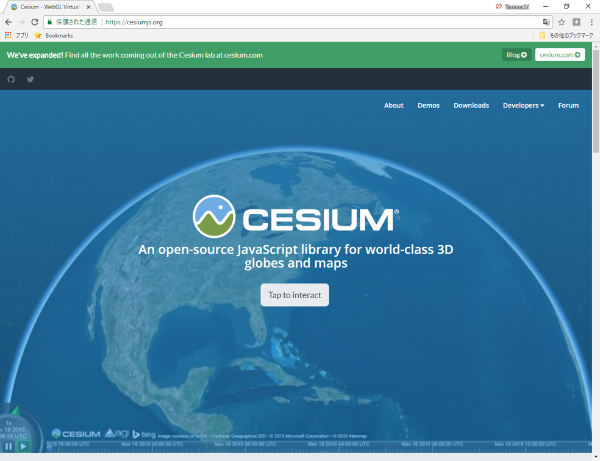 Cesiumの公式サイトをブラウザで開く。 ページ下段のGet HelloWorld.jsのPLAY WITH THIS CODEクリックし、Cesium画面を表示する。

 右上のボタンから、複数BaseMapを選択することができる。
右上のボタンから、複数BaseMapを選択することができる。
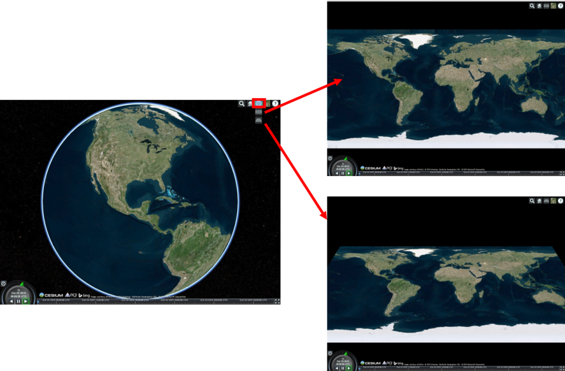 右上のボタンから、球体、平面、角度つき平面の３つで地球を表現できる。
Cesiumのダウンロード
 CesiumのホームページのDownloadsから、ダウンロードすることができる。
CesiumのホームページのDownloadsから、ダウンロードすることができる。
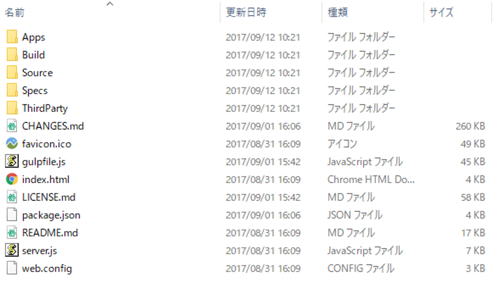 GitHubでリポジトリを作成して、ローカルからPushすることでCesiumをwebにアップロードできる ※デモデータなどが入っているため重たいため、本教材では使用しない。
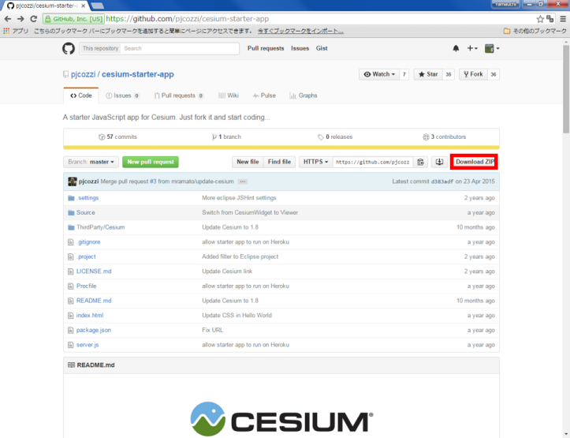 https://github.com/pjcozzi/cesium-starter-app にアクセスし、「Download ZIP」 をクリックする。 pjcozzi氏がCesiumを編集しやすい形にしたものを公開しているためそれを利用する。
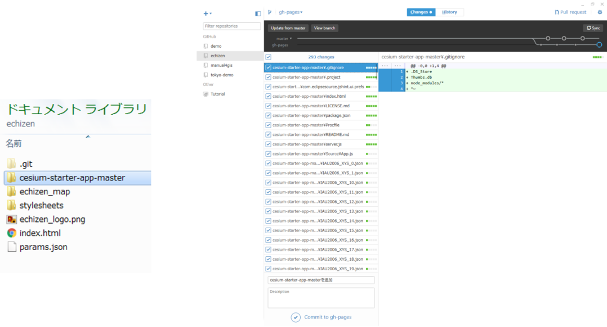
解凍した「cesium-starter-app」をクリックし、ローカルリポジトリへ移動する。
クライアントソフトを更新しておく。
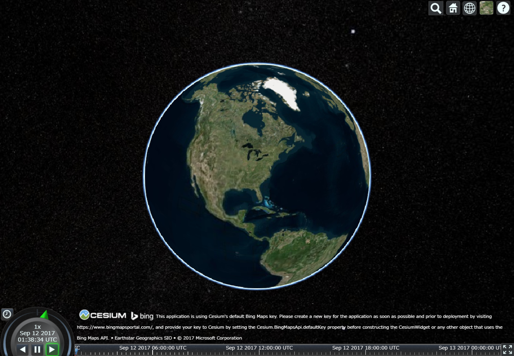
http://（ユーザー名）.github.io/echizen/cesium-starter-app-master/index.html
gh-pagesを開き、Cesiumの起動を確認する。 ※ローカルでCesiumは起動しない
レイヤを追加する
ポイントを追加する
（以下、クライアントソフトのsyncを行う点は省略する） 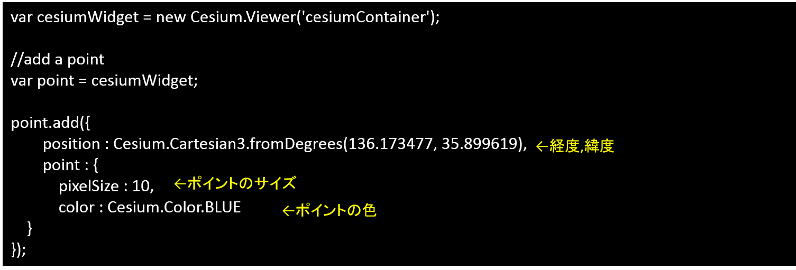 ポイントを追加する：point とへいう変数を設定し、色や位置を設定する。
 青い円形のポイントが、越前市周辺に追加された。
青い円形のポイントが、越前市周辺に追加された。
ラインを追加する
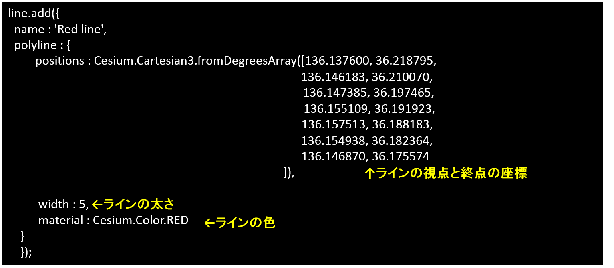
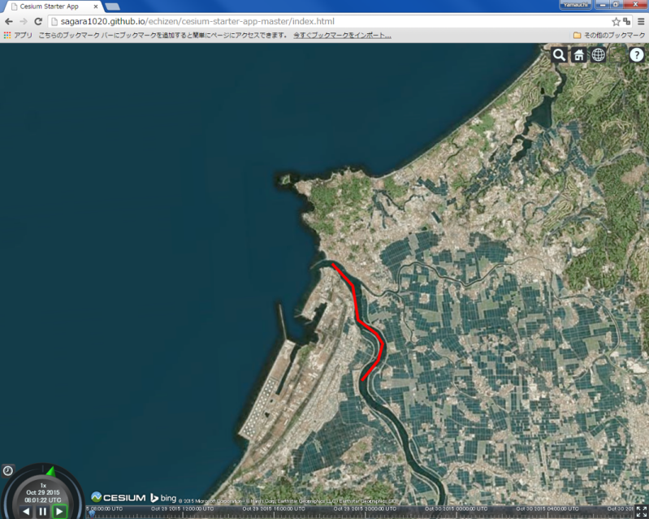 九頭竜川に沿って、赤いラインが作成できた。
ポリゴンを追加する
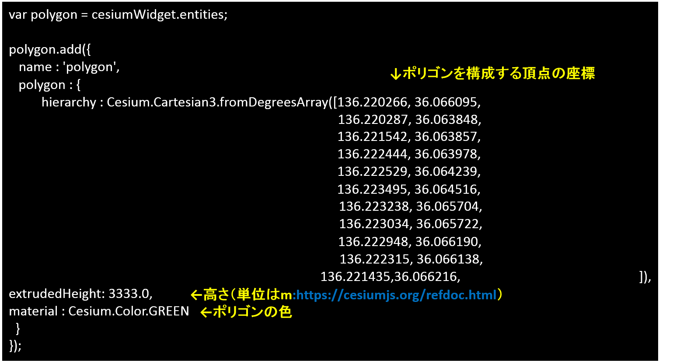
 高さを保持した緑色のポリゴンが表示できた。
高さを保持した緑色のポリゴンが表示できた。
視点を変更する
cesiumWidget.camera.flyTo({
destination : Cesium.Cartesian3.fromDegrees(136.194763, 36.047711, 45000.0)});
ビューワーの視点を変更するコードを追加（経度、緯度、視点の高さを入力する）し、再読み込みを行うと視点が変更される。
KMLの作成と読み込み
Google EarthでKMLを作成→Cesiumで読み込み
Google Earth proでシェープファイルを読み込む。 ファイル＞開く （想定浸水区域と一次避難所のshape）
取得したアイテムにスタイルテンプレートを適用（スタイルを調整）。 名前を指定する：「名前フィールド」を設定する。 色を指定する：「フィールドから色を設定する」を選択する。 設定ができたらOKをクリックし、テンプレートを保存する。
レイヤの上で右クリックし、プロパティから、ポリゴンの透過度を変更する。想定浸水区域のポリゴンと同じく、名前、色、アイコン、高さなどを設定する。
レイヤの上で右クリックし、追加→フォルダを選択し、フォルダ名を入力する。 フォルダーを移動して、フォルダの中にポリゴンとポイントのデータをまとめる。
KML読み込み
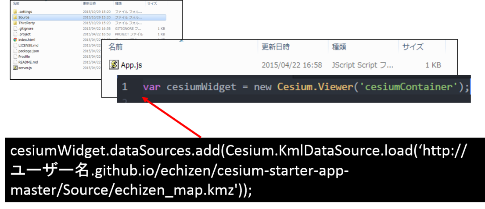
Sourceファイルの中のApp.jsをテキストエディタで開く。
var cesiumWidget = new Cesium.Viewer('cesiumContainer');
の下にKMLを読み込むコードを入力する。
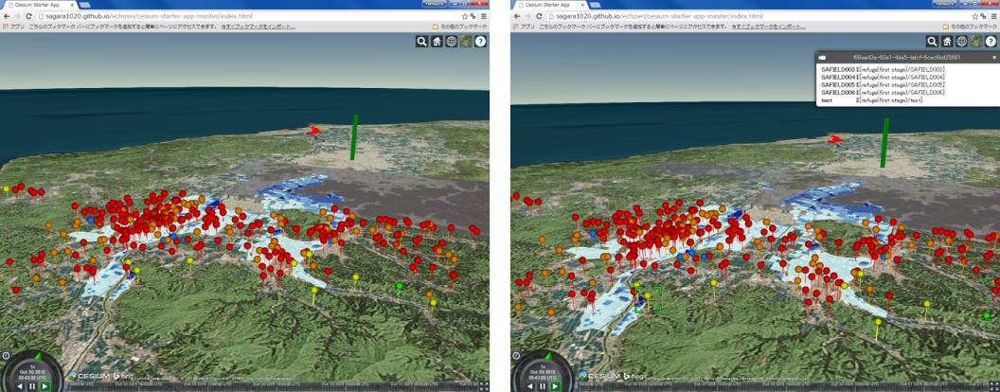 クライアントソフトを通してアップロードし、Webで確認すると↑のように表示される。 ポイントをクリックすると、KMLの属性データが反映されていない。
KMLの書き換え
GoogleEarthから、ポイントレイヤの上で右クリックし、名前をつけて場所を保存から新規にKMLを保存する。
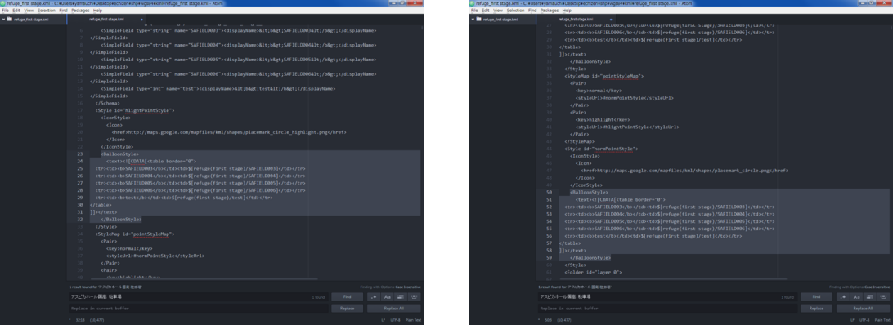

5. Google Earthからポイントレイヤの上で右クリックし、名前をつけて場所を保存から新規にKMLを保存する。
6. テキストエディタを開き、KMLを書き換える。
7. KMLをもう一度読み込み、表示を確認する。プロパティを開きその他の情報を追加する。
8. バルーンの設定:リンクを追加をクリックしURLを追加する（越前市の防災課）。 アイコンの設定：ラベルの縮尺を0.0にする。
9. 凡例画像を作成し、GitHubにアップロードし、Google Earthでレイヤのプロパティから、画像を追加する。 アップロードしたURLを指定すると、Cesiumで画像を表示できる。
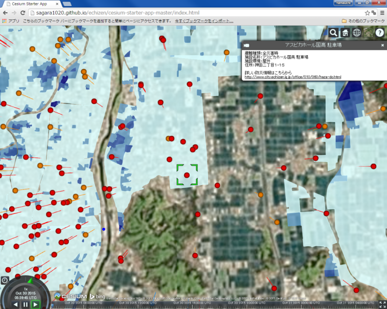 Cesiumで表示すると、ポイントの情報が表示できる。
凡例の画像はここをクリック
{kind=link}
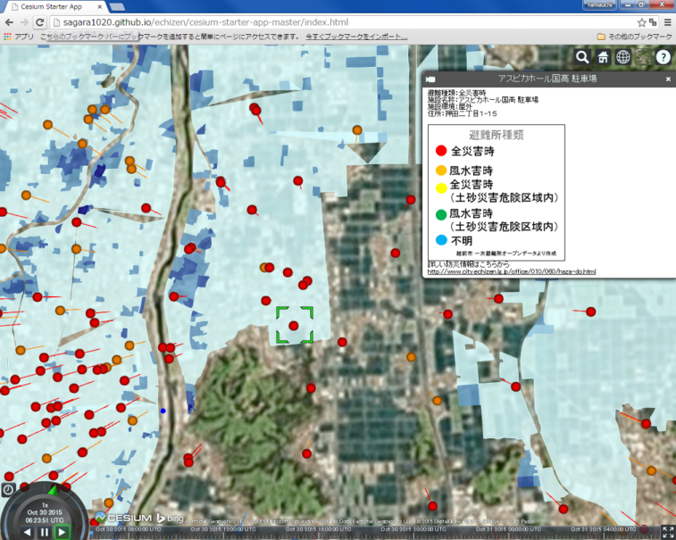 ポイントをクリックすると凡例も表示できるようになった。
ライセンスに関する注意事項
本教材で利用しているキャプチャ画像の出典やクレジットについては、その他のライセンスについてよりご確認ください。